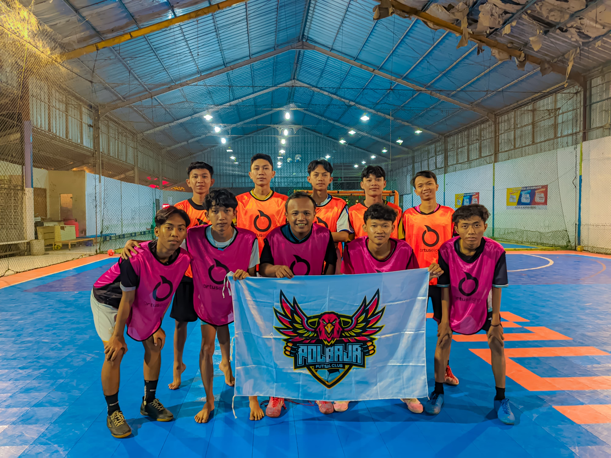

Futsal
Unit Kegiatan Mahasiswa Futsal Politeknik Baja Tegal adalah
organisasi kemahasiswaan yang berfokus pada pengembangan bakat dan
prestasi dalam olahraga futsal. UKM ini bertujuan untuk menciptakan
lingkungan di mana mahasiswa dapat berkembang secara fisik, mental,
dan sosial melalui olahraga futsal, serta berkontribusi pada
prestasi akademik dan pengembangan karakter.

Visi
Menjadi pusat pengembangan bakat dan prestasi dalam olahraga futsal
di tingkat politeknik, melalui dedikasi, kerja keras, dan semangat
kebersamaan.
Misi
Misi Ukm Futsal Politeknik Baja Tegal adalah:
-
Mengidentifikasi, melatih, dan mendukung bakat-bakat futsal
mahasiswa untuk mencapai potensi maksimal mereka.
-
Meningkatkan kesadaran akan manfaat olahraga futsal dalam
kebugaran fisik dan kesehatan mental serta pendidikan
karakter.
-
Membangun hubungan yang kuat dan mendukung kerja sama tim
dalam lingkungan yang positif dan inklusif.
-
Mendorong mahasiswa untuk mencapai prestasi akademik yang
tinggi sejalan dengan keterlibatan aktif dalam UKM Futsal.
-
Mendorong pengembangan keterampilan kepemimpinan melalui peran
dalam manajemen dan organisasi UKM Futsal.
-
Membangun kemitraan yang berkelanjutan dengan pihak lain di
politeknik dan komunitas sekitar untuk mendukung pertumbuhan
dan perkembangan UKM Futsal.